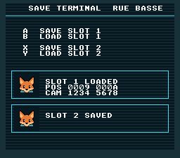

|
OpenSNES
Modern Open-Source SNES Development SDK
|
|
OpenSNES
Modern Open-Source SNES Development SDK
|

How to save and load game data using the SNES cartridge SRAM (Static RAM). The SRAM is battery-backed – data persists even when the console is powered off. This is how classic SNES games like Zelda and Final Fantasy save progress.
The screen is a save terminal of the Rue basse: two slot cards on the terminal's glass. Saving or loading a slot writes its status in its card and puts Kit's icon there; a load prints the values read back.
Read text/print_string first (console setup, text display).
| Button | Action |
|---|---|
| A | Write test data to Slot 1 |
| B | Read Slot 1 and show it in its card |
| X | Write test data to Slot 2 |
| Y | Read Slot 2 and show it in its card |
Then open save_game.sfc in luna or any emulator. luna keeps the battery in a .srm file when asked (srm_out / srm_in in a test manifest: this example's three manifests save, power-cycle and read back).
The structure is 8 bytes. In a real game, this would hold player position, inventory, level progress, etc.
sramSaveOffset() copies SAVE_SIZE bytes from RAM to SRAM at the given offset. Multiple save slots use different offsets (Slot 0 at offset 0, Slot 1 at offset 8, etc.).
sramLoadOffset() copies bytes back from SRAM into a RAM structure. The loaded values are then displayed as hex on screen using textPrintHex().
USE_SRAM sets the ROM header flag telling the emulator (or real hardware) that the cartridge has battery-backed SRAM. SRAM_SIZE = 3 means 8 KB (2^3 = 8 KB).
textModeInit() sets Mode 0 with the text on BG1 (font at VRAM $0000, map at $3800). The terminal is a four-colour picture on BG2; in Mode 0 each BG has its own palettes, BG2's from CGRAM 32, which BG_4COLORS0 selects:
BG1 is in front of BG2 in Mode 0, so the text sits on the glass. show_slot() writes a slot's status in its card and moves that slot's sprite, Kit's icon, into the card's well. The text module's NMI hook sends what was written at the next VBlank.
In LoROM mode, SRAM is mapped at $70:0000-$71:FFFF (up to 64 KB, though most cartridges have 8 KB). In HiROM mode, it appears at $20:6000-$3F:7FFF. The sramSaveOffset() and sramLoadOffset() functions handle the addressing – you just provide a byte offset.
Save slots are simply offsets into SRAM. With 8 KB of SRAM and 8-byte saves, you could theoretically have 1024 slots. Real games use 3-4 slots with larger structures (100-500 bytes for RPG save states).
This example does not validate saves. A real game should store a checksum alongside the save data to detect corrupted SRAM (weak battery, first boot with uninitialized RAM, etc.). A simple XOR or CRC-8 of the save bytes suffices.
On real SNES hardware, a CR2032 lithium battery in the cartridge powers the SRAM when the console is off. Batteries last 15-25 years. In emulators, the SRAM is saved to a .srm file on disk.
| File | Purpose |
|---|---|
| main.c | Save/load logic, the cards, input handling |
| res/terminal.png | BG2, the terminal (2bpp, four colours) |
| res/icon.png | Kit's icon, 32x32 |
| Makefile | USE_SRAM := 1, LIB_MODULES := console dma text background sprite input |
res/terminal.png is drawn by devtools/art_assets/build.py (terminal), res/icon.png is the Néo-Lumen logo/kit_icon.png indexed by save_icon (CC0; assets/neo-lumen/README.md); the build converts both from the settings file beside each.
console, dma, text, background, sprite, input (LIB_MODULES in the Makefile).